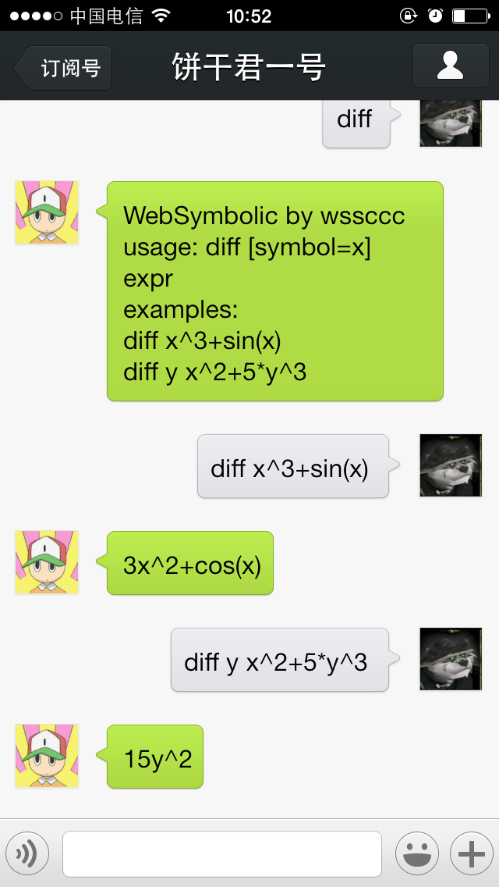

用info命令可以看到到现在为止，饼干君已经存在1年零1月零3天了。
饼干君的诞生是由于以下几个事情：
- 赵伯弄了一个微信公共账号
- 我通过了SAE高级开发者认证
- 知道了被玩坏的白丝魔理沙
觉得自己也可以实现一个，所以在1月份的时候，用了2个晚上的时间，实现了一个基于语料库的问答系统。
然后凭着仅存的一点php知识，给弄到SAE上跑起来了。
饼干君之后我开始关注一些机器人，后来看到了Moec Core这个东西。http://wiki.oekaki.so/
这是一个神秘的组织……
也就是那个时候看到了NekoScript。
当时的设想是，饼干君使用脚本语言来实现后台逻辑，这个事情后来不了了之。
没有找到合适的脚本语言是一方面，另一个更重要的问题是我想做一个像NekoScript的东西。
这个时候我想起来wolfram alpha，想起了maxima。然后开始尝试从cellular automata和lisp入手。
cellular automata……只能说太前沿了……
对lisp以及functional programming的探索一直持续了很久。看到parser combinator才算知道了一点里面的精妙之处。
探索parser的过程中，发现了大神王垠，不过他的blog要辩证的看……
饶了一大圈，最终理解的也就是GEB里面的内容，然后用这个东西完成了符号微分的程序，然后加到了饼干君里面。
这个符号微分程序还没有到实用的级别，它只是为了证明我也可以写symbolic calculus的东西了。
去年这个时候开始做饼干君这个微信公共账号，当时的功能只有模糊搜索的聊天功能。
后来慢慢加入了查询天气，查询维基等。
查询天气功能很欢乐，支持下面的各种问法：
今天天气
今天北京天气
北京明天天气
后天天气
大后天天气
……
前几天顺手写了表达式解析，昨天顺手就加到饼干君里面了。
也算是实现了去年的一个愿望 :)
diff是求导的命令，用法是
diff [symbol=x] expr
几个例子
diff x^3+sin(x) //默认是对x求导，所以第一个参数可以省略
diff y x^2+5*y^3 //对y求导，其它symbol被当成常数
附个图吧

扫描二维码添加

其实是在整一个编译器一样的东西，不过编译器前前后后乱七八糟的太多，我也不确定写完之后它会是什么样子（也可能是个解释器）。
不过前两个部分是妥妥儿的了，所以暂且称之为parser。
和一般的parser不同，这个parser既不是针对特定语言手写的，也不是parser工具生成的。
它可以读入词法描述和语法描述，然后再开始parse。
语法分析使用了LALR(1)。本来是准备用parser组合子的，但是java不支持lambda，调试起来也麻烦，
当然最重要的原因是不支持左递归……
现在语法分析器已经可以支持error符号的错误恢复，和空产生式了。
试用了一些s-exp的语法，工作的还挺好的样子
一直就想做这个东西，后来学编译原理的时候，老师只让我们做了SLR(1)的实验，觉得局限很大，
后来看到这个系列文章一个链接
跟着做了做，发现里面有很多问题，比如构造正则表达式的DFA处理unicode时，比如使用的解析器组合子方法本身的问题等等。
去年这个时候开始关注王垠，最近抽空读了很多他的博客，虽然给人一种“无法交流感”，但是他有很多十分独到的见解。
www.yinwang.org
Copyright ©wssccc 2013 using wsc_blog_generator 
本作品采用知识共享署名-禁止演绎 3.0 未本地化版本许可协议进行许可。